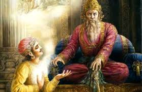

॥ অধ্যায় ১, শ্লোক ১ ॥
ধৃতরাষ্ট্র উবাচ ।
ধর্মক্ষেত্রে কুরুক্ষেত্রে সমবেতা যুযুত্সবঃ ।
মামকাঃ পাণ্ডবাশ্চৈব কিমকুর্বত সঞ্জয় ॥ ১ ॥
সরল ভাবার্থ: ধৃতরাষ্ট্র বললেন— হে সঞ্জয়! ধর্মভূমি কুরুক্ষেত্রে যুদ্ধের বাসনায় সমবেত হয়ে আমার পুত্রগণ এবং পাণ্ডুপুত্রগণ কী করল?
ধর্মীয় প্রেক্ষাপট ও গভীর ব্যাখ্যা:
গীতার প্রথম শব্দটিই হলো 'ধর্মক্ষেত্র'। কুরুক্ষেত্র একটি সাধারণ যুদ্ধের ময়দান ছিল না, এটি ছিল হাজার বছরের প্রাচীন তপোভূমি। এখানে যুদ্ধ হওয়া মানে কেবল অস্ত্রের সংঘাত নয়, বরং সত্য ও মিথ্যার সংঘাত। ধৃতরাষ্ট্র জন্মান্ধ ছিলেন, কিন্তু তাঁর মনের অন্ধত্ব ছিল আরও গভীর। এই শ্লোকে তাঁর অন্তরের পক্ষপাতিত্ব স্পষ্টভাবে ফুটে উঠেছে। তিনি 'মামকাঃ' (আমার পুত্ররা) এবং 'পাণ্ডবাঃ' (পাণ্ডবরা) বলে দুই বংশের মধ্যে বিভাজন করেছেন, যদিও উভয় পক্ষই তাঁর আত্মীয়।
ধর্মীয় তত্ত্বে ধৃতরাষ্ট্র হলেন 'অজ্ঞানতা' বা মোহের প্রতীক। তিনি জানতেন যে তাঁর পুত্ররা অনধর্মের পথে চলছে, তবুও পুত্রস্নেহে তিনি অন্ধ ছিলেন। কুরুক্ষেত্রকে ধর্মক্ষেত্র বলা হয়েছে কারণ সেখানে স্বয়ং ধর্মরাজ বা পরমেশ্বর ভগবান শ্রীকৃষ্ণ উপস্থিত ছিলেন। ধৃতরাষ্ট্র ভয় পাচ্ছিলেন যে, পবিত্র ধর্মক্ষেত্রের প্রভাবে তাঁর পুত্রদের মনে কোনো বৈরাগ্য আসবে না তো? অথবা পাণ্ডবরা তাদের ধর্মের জোরে জয়ী হবে না তো? এই শ্লোকটি আমাদের মনের যুদ্ধেরও প্রতিফলন। আমাদের ভেতরেও প্রতিদিন 'কুরুক্ষেত্র' বা যুদ্ধ চলে—সদগুণ (পাণ্ডব) এবং অসদগুণের (কৌরব) মধ্যে। অজ্ঞানতা সব সময় নিজের স্বার্থ দেখে, যা ধৃতরাষ্ট্রের প্রশ্নের মাধ্যমে প্রকাশিত হয়েছে। এই শ্লোকটি আমাদের স্মরণ করিয়ে দেয় যে, জীবনের প্রতিটি কাজ যেন ধর্মের ভিত্তিতে হয়, মোহের ভিত্তিতে নয়।

[ছবি: রাজপ্রাসাদে অন্ধ রাজা ধৃতরাষ্ট্র এবং দিব্যদৃষ্টিসম্পন্ন সঞ্জয় বসে আছেন, সঞ্জয় যুদ্ধের বর্ণনা দিচ্ছেন—এমন একটি প্রাচীন শৈলীর ছবি।]